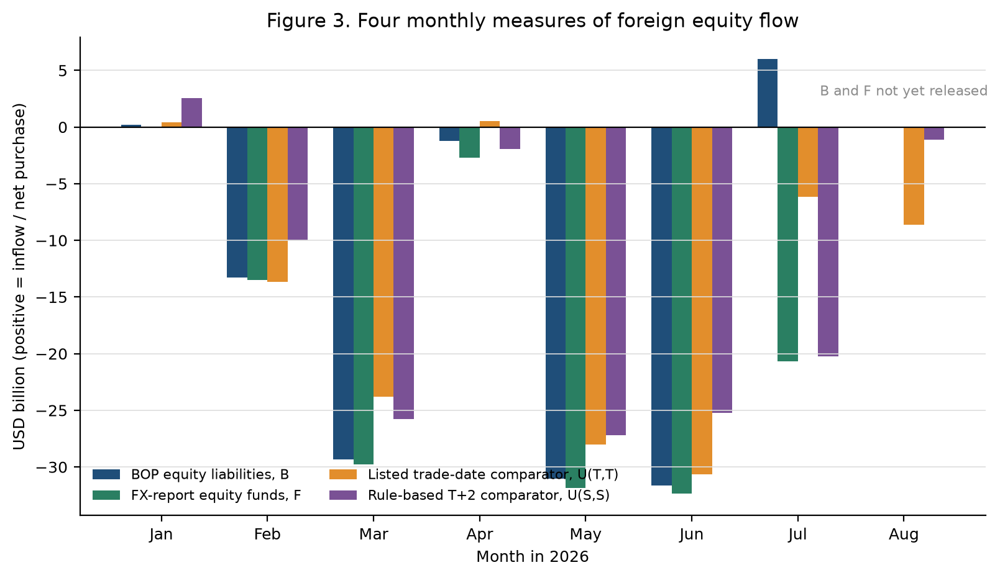
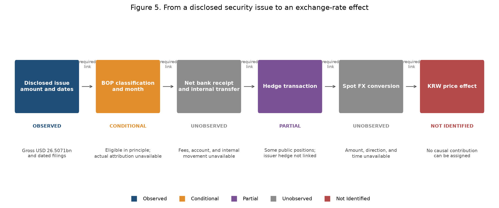

환율 반전기의 자본흐름
2026년 원화의 약세와 강세 전환에서 공개자료가 확인하는 것, 충돌하는 것, 그리고 아직 식별하지 못하는 것
English version — Capital Flows in an Exchange-Rate Reversal
환율 자료는 2026년 8월 31일까지, 공식 월별 자금흐름은 2026년 7월까지 반영했다.
원화는 왜 약해졌다가 더 빠르게 강해졌는가?
2026년 원화는 상반기에 약세를 보인 뒤 7월과 8월에 그보다 큰 폭으로 강세 전환했다. 글로벌 달러 움직임과 아시아 비교통화만으로는 변화의 크기를 충분히 요약하기 어렵다. 그러나 남은 차이를 곧바로 국내 자금수급 충격이나 환헤지 효과라고 부를 수도 없다.
이 연구는 하나의 원인을 선택하기보다, 지금까지 확보한 환율·국제수지·외환시장 보고서·상장주식 거래·달러선물·기업공시·회계 및 헤지 자료가 어느 주장까지 지지하는지를 점검한다. 가장 뚜렷한 결과는 7월의 대규모 해외 신주발행이 서로 다른 “외국인 주식자금” 통계의 방향을 바꿀 수 있었다는 점이다.
핵심 요약
| 항목 | 값 |
|---|---|
| 1~6월 원화 약세 | 7.39 로그포인트 |
| 7~8월 원화 강세 | 12.41 로그포인트 |
| 7~8월 Asia-3 대비 차이 | 11.32 로그포인트 |
| 7월 해외 신주발행 | 265.071억 달러 |
| 거래에서 현물환 주문까지의 연결 | 미관측 |
1. 반전은 하루의 사건이 아니었다
한국은행 15시 30분 원/달러 환율은 2025년 말 1,439.0원에서 2026년 6월 말 1,549.4원으로 상승했다. 7월 2일에는 동결 표본의 고점인 1,555.8원을 기록한 뒤 7월 말 1,424.0원, 8월 말 1,368.6원으로 하락했다. 원/달러 상승은 원화 약세를 뜻한다.
| 지표 | 값 | 의미 |
|---|---|---|
| 1,439.0 | 2025년 말 | 분석 구간의 기준점 |
| 1,555.8 | 2026년 7월 2일 | 사후 확인된 표본 고점 |
| +7.39 | 1~6월 누적 변화 | 로그포인트, 원화 약세 |
| −12.41 | 7~8월 누적 변화 | 로그포인트, 원화 강세 |

해석의 출발점: 실물경제가 성장했다는 사실만으로 환율 약세를 퍼즐이라고 규정할 수는 없다. 환율은 미래 여건, 위험선호, 국제 자산수요, 헤지와 시장의 위험흡수 능력에도 반응한다. 따라서 먼저 어떤 비교 기준이 얼마나 실패했는지를 측정해야 한다.
2. 글로벌·아시아 통화의 공통 움직임 뒤에도 큰 차이가 남았다
두 기준을 사용했다. 첫째, 2015년 2월~2025년 12월 자료로 추정한 고정계수 글로벌 모형에 2026년의 실현된 달러요인·VIX·한미 단기금리차를 대입했다. 둘째, JPY·TWD·SGD의 일별 로그변화를 동일 가중한 Asia-3를 만들었다. 둘 다 실시간 예측이나 구조적 반사실이 아니라 제한된 사후 비교 기준이다.
| 구간 | 실제 원화 | 글로벌 적합치 | 실제−글로벌 | Asia-3 | 원화−Asia-3 |
|---|---|---|---|---|---|
| 2026년 1~6월 | +7.39 | +2.37 | +5.02 | +2.03 | +5.36 |
| 2026년 7~8월 | −12.41 | −1.73 | −10.68 | −1.09 | −11.32 |

7~8월과 같은 42거래일의 원화−Asia-3 누적 차이는 2025년 5월 7일 이후 만들 수 있는 282개 중첩구간 중 가장 컸다. 이는 최근 비교구간에서 두드러졌다는 서술통계다. 표본이 짧고 구간이 중첩되므로 장기 발생확률이나 공식적인 유의확률로 해석하지 않는다.
3. “외국인 주식자금”은 하나의 숫자가 아니다
국제수지, 외환시장 보고서와 상장주식 거래는 시장·상품·거주성·신규발행 포함범위·인식시점·환산방식이 다르다. 같은 이름처럼 보여도 서로 더하거나 이어 붙일 수 없다.
| 표기 | 자료 | 핵심 측정대상 | 주의점 |
|---|---|---|---|
| B | 국제수지 비거주자 주식부채 | 발생주의·경제적 소유권 기준 월별 거래 | 신규발행과 장외거래가 포함될 수 있음 |
| F | 외환시장 보고서 외국인 주식자금 | 보고서가 밝힌 결제 기준 자금 | 국제수지와 통계 범위가 다름 |
| U(T,T) | KOSPI·KOSDAQ 외국인 순매수 | 거래일 기준 상장주식 대조값 | 은행결제·현물환 주문이 아님 |
| U(S,S) | 상장주식 순매수의 규칙상 이동 | KRX 달력 T+2 결제월 대조값 | 실제 결제원장을 관측한 값이 아님 |

달력상 T+2 이동은 F와의 절대격차를 1~7월 중 3개월에는 줄였지만 4개월에는 키웠다. 7월을 제외하면 평균 절대격차는 거래일 기준 25.60억 달러에서 규칙상 결제월 기준 37.72억 달러로 늘었다. 결제시점은 중요하지만, 달력 규칙이 실제 결제·환전 기록을 대신할 수는 없다.
4. 대규모 해외 신주발행은 7월 통계의 방향을 바꿀 수 있었다
7월에는 국제수지만 순유입을 기록했고 다른 세 측정치는 유출 또는 순매도였다. 같은 달 SK하이닉스는 총 265.071억 달러 규모의 해외 신주를 발행했다.
| 측정 | 값 (억 달러) | 방향 |
|---|---|---|
| 국제수지 B | +59.82 | 순유입 |
| 외환시장 F | −207.00 | 순유출 |
| 상장주식 U(T,T) | −61.37 | 거래일 기준 |
| 상장주식 U(S,S) | −202.52 | 규칙상 T+2 |

\[\text{조정 국제수지} = B - \alpha \times \text{해외 신주 발행총액}\]
\(\alpha\)는 발행총액 중 7월 국제수지에 실제 귀속된 비율이다. \(\alpha\)가 22.5675%를 넘으면 조정값의 부호가 음수로 바뀐다. 발행총액 전부가 7월 B에 들어갔다고 가정하면 조정 국제수지는 −205.251억 달러로 F와 1.749억 달러 차이만 남는다.
조건부 산술과 인과효과는 다르다. 실제 \(\alpha\), 수수료 차감 후 은행 수취액, 수취 법인과 계좌, 내부 자금이동, 달러 보유, 헤지와 현물환 전환은 공개자료에서 확인되지 않았다. 두 공식 숫자가 가까워지는 것은 통계 해석을 바꾸지만 원화 강세의 원인을 입증하지 않는다.
5. 시장·회계·헤지 자료는 설명 후보를 좁혔지만 거래를 끝까지 연결하지 못했다
당일 주식거래. 2026년 162거래일에서 외국인 상장주식 순매수는 원화 강세와 같은 날 함께 움직였다. 1조원당 계수는 −0.102 로그포인트였으나 동시결정 때문에 인과효과로 읽을 수 없다.
달러선물. 외국인 달러선물 순매수는 6월 +11.65억 달러에서 7월 −13.81억, 8월 −29.00억 달러로 바뀌었다. 주식과 선물을 함께 넣어도 7월 강세의 큰 부분이 남았다.
기업 회계. 독립적으로 재구축한 7개 기업 135개 관측에서 순 USD 금융잔액 계수는 −0.0162, 95% 구간은 −0.1948~0.1624였다. 초기의 강한 결과는 재현되지 않았다.
공개 헤지자료. ETF 계약 연결은 예정한 10일 중 3일에 그쳤다. 전체 외화자산과 파생포지션이 없으면 같은 선물잔액 감소가 헤지율 상승·유지·하락과 모두 양립한다.

6. 현재 증거가 허용하는 결론의 경계
확인된 것. 7~8월 원화 강세는 제한된 글로벌 기준과 고정가중 Asia-3보다 훨씬 컸다. 7월에는 국제수지 주식유입의 해석을 바꿀 만큼 큰 해외 신주발행이 있었고, 네 주식자금 계열의 방향이 실제로 달랐다.
배제할 수 있는 해석. 7월 국제수지 유입을 기존 국내주식 순매수 전환과 같다고 볼 수 없다. 달력 T+2만으로 통계 차이를 해소할 수 없으며, 글로벌 잔차를 국내 금융충격의 크기라고 부를 수도 없다.
여전히 가능한 설명. 글로벌·국내 뉴스와 기대 변화, 기존 매도압력 완화, 주식·선물·선도·현물환의 결합거래, 신주발행의 예상 또는 실제 흐름, 헤지조정과 시장중개자의 위험흡수가 함께 작동했을 수 있다.
미해결인 것. 각 경로의 인과 기여도, 발행대금의 국제수지 귀속률, 순달러 현금, 수취 법인·계좌, 헤지와 현물환 전환의 금액·방향·시점은 현재 공개자료로 결정할 수 없다.
7. 더 많은 자료보다 연결된 자료가 필요하다
같은 형식의 회계보고서를 추가하면 잔액 관측은 늘어나지만 지급이나 환전과 연결되지 않을 수 있다. 표본이 작더라도 하나의 거래에 대해 공시, 가격결정, 은행수취, 내부이동, 헤지와 현물환 주문을 연결하면 인과판정에 더 많은 정보를 준다.
동일 시각의 국제 비교패널. 원화·아시아 통화·NDF·VIX를 같은 관측시각으로 정렬해 상대 움직임이 시장 마감시각 때문에 생겼는지 점검한다.
실제 결제와 환전 원장. 달력상 T+2가 아니라 실제 거래·결제·수탁·현물환 주문을 연결해 유통시장 주식수요가 환율보다 선행했는지 검증한다.
신주발행 대금의 법인별 추적. 국제수지 귀속, 순은행수취, 수수료, 법인별 내부이동, 사용처, 달러 보유와 헤지·환전 기록을 연결한다.
통합 포지션 자료. 계좌·펀드별 주식, 선물·선도·NDF, 외화자산과 현물환 주문을 함께 관측해 신규취득 헤지와 기존 자산의 재헤지를 분리한다.
Working paper
영문 Working Paper에는 전체 추정식, 표본 정의, 민감도 분석, 음의 결과와 중단된 분석을 포함한 26개 그림과 31개 표 세트가 수록되어 있다.
권장 인용
Kim, Hyun Hak (2026). “Capital Flows in an Exchange-Rate Reversal: Evidence from Korea.” Working Paper, Expanded Version 3, September 14.
데이터와 코드
연구에 사용한 원자료, 가공 데이터셋과 분석 코드는 이 공개 웹사이트 및 공개 저장소에 포함하지 않습니다.
학술적 재현·검증을 위한 공유 요청은 연구 목적, 필요한 자료와 사용 범위를 검토한 뒤 저자의 명시적 승인에 따라 개별적으로 처리합니다. 제3자 라이선스나 재배포 제한이 있는 자료는 공유 범위에서 제외될 수 있습니다. 문의는 hyunhak.kim@kookmin.ac.kr로 주시기 바랍니다.